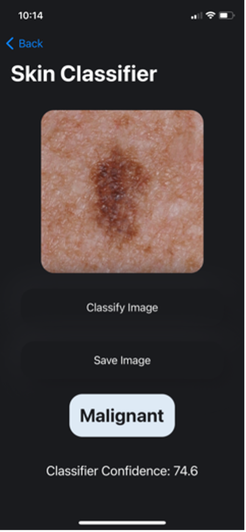
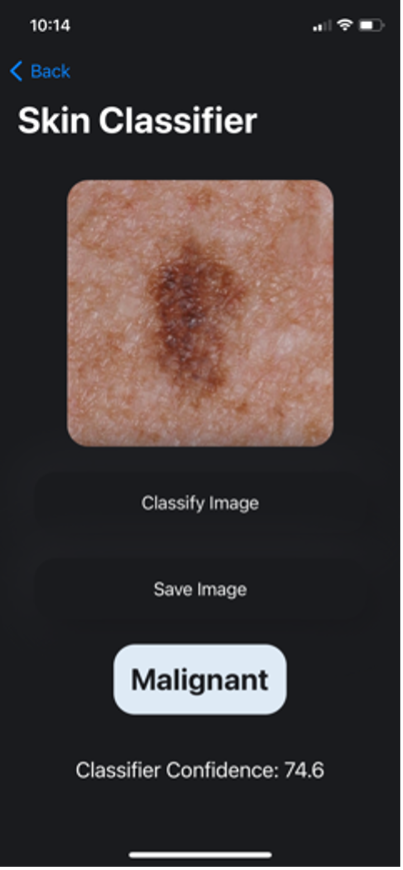
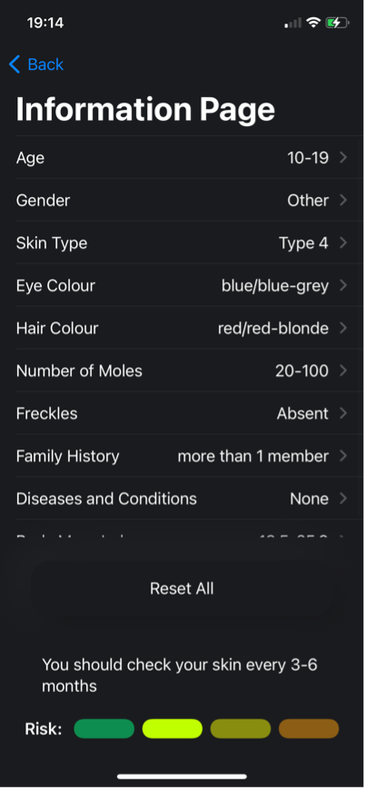
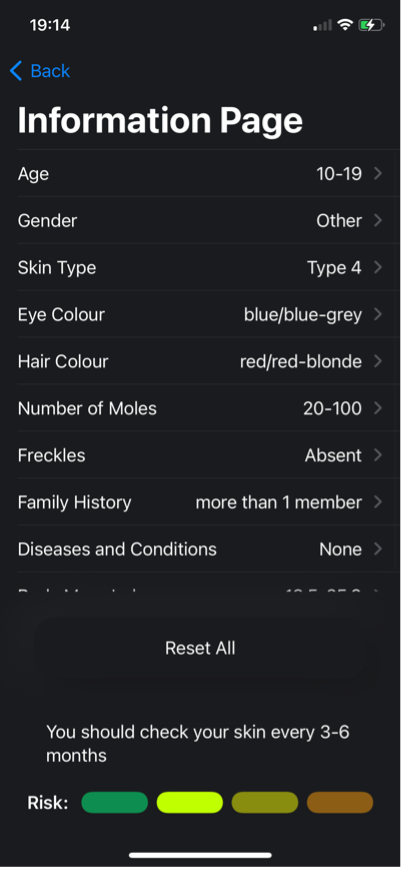

a few projects.
01_Melanoma Scan
Melanoma Scan is a an iOS app I developed to help diagnose skin cancer using just iPhone cameras.
Here's the app demo.
I developed this app using XCode, and built the image classfication model with inspiration from the
Inception v3 model. I have documented everything about developing
the app (from the ideation to stakeholder interviews to sprints & ticketing to testing and evaluation) here.
I learnt a lot through this project, such as full stack development, proper use of OOP, using APIs, creating and optimising ML models,
using phone hardware (GPS and Cameras), data clearning & management, user-friendly and intuitive design, all while maintaining that the stakeholders are satisfied.
 

 

02_Machine Learning for Proteins and Drug Discovery
I'm currently working under Dr Rohit Singh
about machine learning models for better drug development.
I am further developing the ConPLex deep learning protein language model, which takes in molecule-protein
pairs and efficiently predicts the likelihood that the molecule and protein will interact in a desired manner.
I am currently improving its accuracy by training it on the LIT-PCBA proteins dataset to improve the model's
prediction capabilities using contrastive learning.
The goal is to improve the 1-shot prediction capabilities, so that rare genetic diseases may be dealt with much more efficiently.
Also developing pipeline to allow non-technical biologists to use model to generate predictions.
03_Solar Panel Dust Sensor
Solar panels are an emerging source of renewable energy,
but they accumulate dust that decreases their efficiency significantly.
Our team designed a solar panel dirtiness sensor for Dr. Mike Bergin (Duke University Professor)
and Michael Valerino (Duke University PhD Student) to determine when solar panels require cleaning,
in order to maximize energy output.
Existing industrial solutions are expensive (over $8,000) and large (around a meter in length).
Additionally, previous teams have tackled this problem with a Raspberry Pi and a backup clock,
which proved cumbersome and time-consuming to set up. With our solution, we hope to tackle these existing problems
and create a low cost, easy to set up, functional sensor.
To mitigate the global problem of dust accumulation on solar panels, we created a small,
easy to setup sensor that captures magnified photos of dust on a glass slide at specified time intervals.

04_Logisim CPU
Built a fully functioning CPU in Logisim.
Designed and implemented a fully functioning 16-bit word addressed RISC architecture CPU in Logisim.
The CPU is based on the MIPS assembly language.
Can carry out basic ALU operations such as add, sub, and, not etc. as well as
Program Counter based operations such as jumps (and links), jump returns and branching.
Also dealt with load/storing words into main memory, and dealing with keyboard inputs and displaying outputs.
Built all components of the CPU from the ground up (using nothing but wires, D flip flops, and/not/or gates and control buffers)
- ie the ALU, controller, shifters, register files, entire CPU pipeline.
05_Raiz Vertical Farms
This is going to have info about my vertical farming internship.